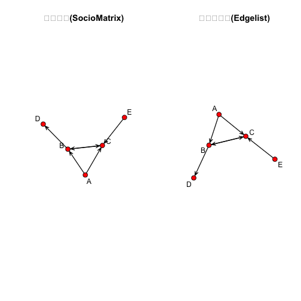

xwMOOC 기계학습
네트워크 데이터
1. 네트워크 데이터 구조
기본적인 네트워크 데이터 표현 형식은 다음과 같은 사회행렬(SocioMatrix) 자료구조를 갖는다.
| A | B | C | D | E | |
|---|---|---|---|---|---|
| A | 0 | 1 | 1 | 0 | 0 |
| B | 0 | 0 | 1 | 1 | 0 |
| C | 0 | 1 | 0 | 0 | 0 |
| D | 0 | 0 | 0 | 0 | 0 |
| E | 0 | 0 | 1 | 0 | 0 |
즉 각 노드간에 관계가 있냐 없냐를 없으면 0, 연결관계가 있다면 1로 표현한다. 하지만, 이와 같이 표현을 하게 되면 네트워크가 큰 경우 거의 대부분의 관계가 0으로 없음에도 불구하고 이를 사회행렬로 표현하게 되어, 저장공간 낭비가 엄청 심하게 된다.
노드가 10, 100, 1000 이며, 평균 연결수가 3 인 경우 1000개 노드를 갖는 네트워크를 사회행렬로 표현할 경우 997,000 개의 빈셀을 갖게 된다. 이런 이유로 엣지리스트(Edgelist) 로 네트워크를 데이터로 표현할 경우 동일한 네트워크를 효과적으로 표현할 수 있다.
| 노드 | 평균 연결수 | 엣지 | 밀도 | 빈셀 |
|---|---|---|---|---|
| 10 | 3 | 15 | 0.33 | 70 |
| 100 | 3 | 150 | 0.03 | 9,700 |
| 1,000 | 3 | 1,500 | 0.00 | 997,000 |
상기 사회행렬을 엣지리스트로 표현하면 다음과 같다. 소규모 네트워크에서는 데이터에 큰 차이가 없지만, 중소규모, 대규모로 네트워크 규모가 커지면 네트워크 표현에 대한 효과를 체험하게 된다.
| From | To |
|---|---|
| A | B |
| A | C |
| B | C |
| B | D |
| C | B |
| E | C |
1.1. 네트워크 객체에 저장되는 정보
노드와 엣지는 네트워크 자료형으로 꼭 필요하지만, 추가적인 정보를 더 담을 수 있고, 담아야 한다. 노드와 엣지 외에도 노드 속성, 엣지 속성, 네트워크 메타데이터가 네트워크 자료형을 구성하고 있다.
| 구성요소 | 설명 | 필수여부 |
|---|---|---|
| 노드 | 노드 혹은 Vertex라고 불리며 네트워크 노드를 구성 |
필수 |
| 엣지 | 엣지 혹은 링크, Tie라고 불리며 네트워크 연결을 담당 |
필수 |
| 노드 속성 | 노드 속성을 표현, 노드가 사람인 경우 성별 등 | 선택옵션 |
| 엣지 속성 | 엣지 속성을 표현, 엣지가 금융거래의 경우 거래금액 등 | 선택옵션 |
| 메타데이터 | 전체 네트워크에 대한 정보를 포함 | 네트워크에 따라 다름 |
1.2. statnet 네트워크 객체 생성 – 사회행렬
statnet 팩키지에서 네트워크 노드는 Vertex라고 부른다. network 함수를 사용해서 네트워크 객체를 생성하게 된다. matrix.type="adjacency"으로 설정하여 사회행렬 자료 구조를 R 네트워크 자료구조로 변환시킨다.
suppressWarnings(suppressMessages(library(network)))
# 1. 사회행렬(Sociomatrix)
netmat1 <- rbind(c(0,1,1,0,0),
c(0,0,1,1,0),
c(0,1,0,0,0),
c(0,0,0,0,0),
c(0,0,1,0,0))
rownames(netmat1) <- c("A","B","C","D","E")
colnames(netmat1) <- c("A","B","C","D","E")
net1 <- network(netmat1, matrix.type="adjacency")
class(net1)[1] "network"
summary(net1)Network attributes:
vertices = 5
directed = TRUE
hyper = FALSE
loops = FALSE
multiple = FALSE
bipartite = FALSE
total edges = 6
missing edges = 0
non-missing edges = 6
density = 0.3
Vertex attributes:
vertex.names:
character valued attribute
5 valid vertex names
No edge attributes
Network adjacency matrix:
A B C D E
A 0 1 1 0 0
B 0 0 1 1 0
C 0 1 0 0 0
D 0 0 0 0 0
E 0 0 1 0 0
class(), summary() 함수를 통해 자료형과 더불어 전반적인 사항에 대한 확인이 가능하다.
1.3. statnet 네트워크 객체 생성 – 엣지리스트
동일한 네트워크를 엣지리스트로 표현이 가능하다. matrix.type="edgelist"으로 설정하여 엣지리스트 자료 구조를 R 네트워크 자료구조로 변환시킨다. 특히, network.vertex.names() 함수를 통해 엣지리스트 자료형의 경우 라벨을 붙인다.
suppressWarnings(suppressMessages(library(sna)))
# 2. 엣지리스트(Edgelist)
netmat2 <- rbind(c(1,2),
c(1,3),
c(2,3),
c(2,4),
c(3,2),
c(5,3))
net2 <- network(netmat2,matrix.type="edgelist")
network.vertex.names(net2) <- c("A","B","C","D","E")
class(net2)[1] "network"
summary(net2)Network attributes:
vertices = 5
directed = TRUE
hyper = FALSE
loops = FALSE
multiple = FALSE
bipartite = FALSE
total edges = 6
missing edges = 0
non-missing edges = 6
density = 0.3
Vertex attributes:
vertex.names:
character valued attribute
5 valid vertex names
No edge attributes
Network adjacency matrix:
A B C D E
A 0 1 1 0 0
B 0 0 1 1 0
C 0 1 0 0 0
D 0 0 0 0 0
E 0 0 1 0 0
# 시각화
par(mfrow=c(1,2))
gplot(net1, vertex.col = 2, displaylabels = TRUE, main="사회행렬(SocioMatrix)")
gplot(net2, vertex.col = 2, displaylabels = TRUE, main="엣지리스트(Edgelist)")
1.4. 네트워크 조작
노드에 속성을 내외부에서 추가하고 이를 조회하는 것도 가능하다.
set.vertex.attribute() 함수를 통해 외부에서 노드에 대한 속성(gender)을 추가하고, 내부에서도 degree() 속성(alldeg) 추가도 가능하다. 네트워크 노드에 대한 속성은 list.vertex.attributes() 함수로 확인이 가능하다.
# 1. 노드 속성
set.vertex.attribute(net1, "gender", c("F", "F", "M", "F", "M"))
net1 %v% "alldeg" <- degree(net1)
list.vertex.attributes(net1)[1] "alldeg" "gender" "na" "vertex.names"
get.vertex.attribute(net1, "gender")[1] "F" "F" "M" "F" "M"
set.edge.attribute() 함수를 통해 엣지에 속성(rndval) 추가가 가능하다. 나머지 list.edge.attributes() 함수를 통해 엣지에 추가된 속성 확인을 한다.
# 2. 엣지 속성
list.edge.attributes(net1)[1] "na"
set.edge.attribute(net1,"rndval", runif(network.size(net1),0,1))
list.edge.attributes(net1)[1] "na" "rndval"
summary(net1 %e% "rndval") Min. 1st Qu. Median Mean 3rd Qu. Max.
0.1978 0.7111 0.7197 0.6884 0.7842 0.9794
summary(get.edge.attribute(net1,"rndval")) Min. 1st Qu. Median Mean 3rd Qu. Max.
0.1978 0.7111 0.7197 0.6884 0.7842 0.9794
엣지속성은 SNS같은 네트워크를 표현할 때 자주 등장한다. 다음과 같은 SNS에서 좋아요(like)를 표현할 때 요긴한데, ignore.eval=FALSE, names.eval=“like” 인자로 표현하게 되면 네트워크 엣지에 0, 1 대신 실제 값(좋아요 갯수) 사용이 가능하다.
netval1 <- rbind(c(0,2,3,0,0),
c(0,0,3,1,0),
c(0,1,0,0,0),
c(0,0,0,0,0),
c(0,0,2,0,0))
netval1 <- network(netval1,matrix.type="adjacency", ignore.eval=FALSE,names.eval="like")
network.vertex.names(netval1) <- c("A","B","C","D","E")
list.edge.attributes(netval1)[1] "like" "na"
get.edge.attribute(netval1, "like")[1] 2 1 3 3 2 1
as.sociomatrix(netval1), as.sociomatrix(netval1,"like") 를 통해 사회행렬에 표현되는 방식을 달리할 수 있다.
1.5. igraph 네트워크 객체
네트워크 객체를 R에서 표현하는 또다른 방법이 igraph를 활용하는 것이다. igraph 네트워크 객체로 표현하면 노드속성과 엣지속성을 표현하는데 편리한 장점이 있다.
사회행렬을 igraph 네트워크 객체로 가져오는데 graph.adjacency() 함수를 사용한다. 엣지리스트는 graph.edgelist() 함수를 사용한다.
특히, V(), E() 함수를 사용해서 노드와 엣지의 속성을 쉽게 부여한다.
detach(package:statnet)Error in detach(package:statnet): invalid 'name' argument
suppressWarnings(suppressMessages(library(igraph)))
# 사회행렬 igraph 전환
inet1 <- graph.adjacency(netmat1)
class(inet1)[1] "igraph"
#summary(inet1)
#str(inet1)
# 엣지리스트 igraph 전환
inet2 <- graph.edgelist(netmat2)
summary(inet2)IGRAPH D--- 5 6 --
str(inet2)IGRAPH D--- 5 6 --
+ edges:
[1] 1->2 1->3 2->3 2->4 3->2 5->3
# 노드와 엣지 속성 부여
V(inet2)$name <- c("A","B","C","D","E")
E(inet2)$val <- c(1:6)
summary(inet2)IGRAPH DN-- 5 6 --
+ attr: name (v/c), val (e/n)
str(inet2)IGRAPH DN-- 5 6 --
+ attr: name (v/c), val (e/n)
+ edges (vertex names):
[1] A->B A->C B->C B->D C->B E->C
1.6. network, igraph 네트워크 객체 전환
network와 igraph 네트워크 객체를 전환하는데 intergraph 팩키지를 사용한다.
suppressWarnings(suppressMessages(library(intergraph)))
class(net1)[1] "network"
net1igraph <- asIgraph(net1)
class(net1igraph)[1] "igraph"
str(net1igraph)IGRAPH D--- 5 6 --
+ attr: alldeg (v/n), gender (v/c), na (v/l), vertex.names (v/c),
| na (e/l), rndval (e/n)
+ edges:
[1] 1->2 3->2 1->3 2->3 5->3 2->4
2. 네트워크 데이터 실무 사용례
네트워크 데이터는 노드(Node) 와 엣지(Edge) 로 구성된다. 노드 데이터는 네트워크 노드에 대한 상세 정보가 담겨있다. 반면에 엣지 정보는 연결된 링크 정보를 담고 있는데 from, to 형식으로 데이터를 담을 수도 있고, 노드간의 관계를 관계 없음은 0, 관계 있음은 1로 표현한다.
첫번째 네트워크 데이터 형식 표현을 Edgelist 라고 하고, 두번째 데이터 표현방법을 사회행렬(SocioMatrix) 이라고 부른다.
두가지 형태를 갖는 데이터를 불러 읽어오자.
suppressMessages(library(readr))
suppressMessages(library(dplyr))
#-----------------------------------------------------------------------
# edgelist
nodes <- read_csv("https://raw.githubusercontent.com/kateto/R-Network-Visualization-Workshop/master/Data/Dataset1-Media-Example-NODES.csv", col_names = TRUE)Parsed with column specification:
cols(
id = col_character(),
media = col_character(),
media.type = col_integer(),
type.label = col_character(),
audience.size = col_integer()
)
links <- read_csv("https://raw.githubusercontent.com/kateto/R-Network-Visualization-Workshop/master/Data/Dataset1-Media-Example-EDGES.csv", col_names = TRUE)Parsed with column specification:
cols(
from = col_character(),
to = col_character(),
weight = col_integer(),
type = col_character()
)
#-----------------------------------------------------------------------
# 행렬
nodes2 <- read_csv("https://raw.githubusercontent.com/kateto/R-Network-Visualization-Workshop/master/Data/Dataset2-Media-User-Example-NODES.csv", col_names = TRUE)Parsed with column specification:
cols(
id = col_character(),
media = col_character(),
media.type = col_integer(),
media.name = col_character(),
audience.size = col_integer()
)
links2 <- read_csv("https://raw.githubusercontent.com/kateto/R-Network-Visualization-Workshop/master/Data/Dataset2-Media-User-Example-EDGES.csv", col_names = TRUE)Parsed with column specification:
cols(
.default = col_integer(),
X1 = col_character()
)
See spec(...) for full column specifications.
#-----------------------------------------------------------------------
# 데이터 살펴보기
#-----------------------------------------------------------------------
head(nodes)# A tibble: 6 x 5
id media media.type type.label audience.size
<chr> <chr> <int> <chr> <int>
1 s01 NY Times 1 Newspaper 20
2 s02 Washington Post 1 Newspaper 25
3 s03 Wall Street Journal 1 Newspaper 30
4 s04 USA Today 1 Newspaper 32
5 s05 LA Times 1 Newspaper 20
6 s06 New York Post 1 Newspaper 50
head(links)# A tibble: 6 x 4
from to weight type
<chr> <chr> <int> <chr>
1 s01 s02 10 hyperlink
2 s01 s02 12 hyperlink
3 s01 s03 22 hyperlink
4 s01 s04 21 hyperlink
5 s04 s11 22 mention
6 s05 s15 21 mention
nrow(nodes); length(unique(nodes$id))[1] 17
[1] 17
nrow(links); nrow(unique(links[,c("from", "to")]))[1] 52
[1] 49
# 데이터 중복 처리 : 총합
links <- links %>% group_by(from, to, type) %>%
summarise(weight = sum(weight)) %>%
arrange(from, to)head(nodes) 명령어를 통해서 살펴보면 head(nodes2)와 별다른 차이가 없다.
head(nodes)# A tibble: 6 x 5
id media media.type type.label audience.size
<chr> <chr> <int> <chr> <int>
1 s01 NY Times 1 Newspaper 20
2 s02 Washington Post 1 Newspaper 25
3 s03 Wall Street Journal 1 Newspaper 30
4 s04 USA Today 1 Newspaper 32
5 s05 LA Times 1 Newspaper 20
6 s06 New York Post 1 Newspaper 50
head(nodes2)# A tibble: 6 x 5
id media media.type media.name audience.size
<chr> <chr> <int> <chr> <int>
1 s01 NYT 1 Newspaper 20
2 s02 WaPo 1 Newspaper 25
3 s03 WSJ 1 Newspaper 30
4 s04 USAT 1 Newspaper 32
5 s05 LATimes 1 Newspaper 20
6 s06 CNN 2 TV 56
반면에 엣지 정보, 링크 정보는 하나는 from, to 형식으로, 다른 하나는 행렬로 표현된다는 점에서 차이가 있다.
head(links)Source: local data frame [6 x 4]
Groups: from, to [6]
from to type weight
<chr> <chr> <chr> <int>
1 s01 s02 hyperlink 22
2 s01 s03 hyperlink 22
3 s01 s04 hyperlink 21
4 s01 s15 mention 20
5 s02 s01 hyperlink 23
6 s02 s03 hyperlink 21
head(links2)# A tibble: 6 x 21
X1 U01 U02 U03 U04 U05 U06 U07 U08 U09 U10 U11
<chr> <int> <int> <int> <int> <int> <int> <int> <int> <int> <int> <int>
1 s01 1 1 1 0 0 0 0 0 0 0 0
2 s02 0 0 0 1 1 0 0 0 0 0 0
3 s03 0 0 0 0 0 1 1 1 1 0 0
4 s04 0 0 0 0 0 0 0 0 1 1 1
5 s05 0 0 0 0 0 0 0 0 0 0 1
6 s06 0 0 0 0 0 0 0 0 0 0 0
# ... with 9 more variables: U12 <int>, U13 <int>, U14 <int>, U15 <int>,
# U16 <int>, U17 <int>, U18 <int>, U19 <int>, U20 <int>
igraph 팩키지로 데이터를 시각화를 해본다. 가장 먼저 노드와 엣지 데이터프레임을 igraph 네트워크 객체로 변환해야 된다. graph.data.frame 함수가 노드와 엣지 데이터프레임 자료형을 igraph 네트워크 객체로 변환하는데 사용된다.
graph.data.frame 함수에 인자를 두개 넣는다.
- d : 네트워크 엣지(링크)를 넣어 넘긴다.
from,to형식으로 칼럼 두개가 먼저 정의되고,weight,type,label등 엣지를 표현하는 다른 정보가 나머지 칼럼에 담기게 된다. - vertices : 노드 id 로 첫번째 칼럼이 정의되고, 노드를 표현하는 다른 정보가 순차적으로 나머지 칼럼에 담기게 된다.
suppressMessages(library(igraph))
net <- graph.data.frame(links, nodes, directed=T)
netIGRAPH DNW- 17 49 --
+ attr: name (v/c), media (v/c), media.type (v/n), type.label
| (v/c), audience.size (v/n), type (e/c), weight (e/n)
+ edges (vertex names):
[1] s01->s02 s01->s03 s01->s04 s01->s15 s02->s01 s02->s03 s02->s09
[8] s02->s10 s03->s01 s03->s04 s03->s05 s03->s08 s03->s10 s03->s11
[15] s03->s12 s04->s03 s04->s06 s04->s11 s04->s12 s04->s17 s05->s01
[22] s05->s02 s05->s09 s05->s15 s06->s06 s06->s16 s06->s17 s07->s03
[29] s07->s08 s07->s10 s07->s14 s08->s03 s08->s07 s08->s09 s09->s10
[36] s10->s03 s12->s06 s12->s13 s12->s14 s13->s12 s13->s17 s14->s11
[43] s14->s13 s15->s01 s15->s04 s15->s06 s16->s06 s16->s17 s17->s04
IGRAPH DNW- 17 49 --:- D 혹은 U : 방향성 있는 그래프 혹은 방향성 없는 그래프를 기술
- N : 노드가
name속성을 갖는 것을 기술 - W : 가중값이 있는 그래프로 엣지에
weight속성이 있음을 기술 - B : 이분(Bipartite, two-mode) 그래프로 노두가
type속성이 있음을 기술 - 17 49 : 노드가 17, 엣지가 49 개가 그래프에 존재함을 기술
attr: name (v/c), media (v/c), media.type (v/n), type.label (v/c), audience.size (v/n), type (e/c), weight (e/n):- (g/c) : graph-level character attribute
- (v/c) : vertex-level character attribute
- (e/n) : edge-level numeric attribute
- (e/c) : edge-level character attribute
E() 함수를 통해 네트워크 객체에 포함된 엣지 정보를 추출한다. V() 함수를 통해 네트워크 객체에 포함된 노드 정보를 추출한다. 직접 행렬 원소를 뽑아내는 것도 가능하다.
#------------------------------------------------------------------------
# 네트워크 객체 조회
E(net) # "net" 객체 엣지정보 조회 + 49/49 edges (vertex names):
[1] s01->s02 s01->s03 s01->s04 s01->s15 s02->s01 s02->s03 s02->s09
[8] s02->s10 s03->s01 s03->s04 s03->s05 s03->s08 s03->s10 s03->s11
[15] s03->s12 s04->s03 s04->s06 s04->s11 s04->s12 s04->s17 s05->s01
[22] s05->s02 s05->s09 s05->s15 s06->s06 s06->s16 s06->s17 s07->s03
[29] s07->s08 s07->s10 s07->s14 s08->s03 s08->s07 s08->s09 s09->s10
[36] s10->s03 s12->s06 s12->s13 s12->s14 s13->s12 s13->s17 s14->s11
[43] s14->s13 s15->s01 s15->s04 s15->s06 s16->s06 s16->s17 s17->s04
V(net) # "net" 객체 노드정보 조회+ 17/17 vertices, named:
[1] s01 s02 s03 s04 s05 s06 s07 s08 s09 s10 s11 s12 s13 s14 s15 s16 s17
E(net)$type # 엣지 속성 "type" [1] "hyperlink" "hyperlink" "hyperlink" "mention" "hyperlink"
[6] "hyperlink" "hyperlink" "hyperlink" "hyperlink" "hyperlink"
[11] "hyperlink" "hyperlink" "mention" "hyperlink" "hyperlink"
[16] "hyperlink" "mention" "mention" "hyperlink" "mention"
[21] "mention" "hyperlink" "hyperlink" "mention" "hyperlink"
[26] "hyperlink" "mention" "mention" "mention" "hyperlink"
[31] "mention" "hyperlink" "mention" "mention" "mention"
[36] "hyperlink" "mention" "hyperlink" "mention" "hyperlink"
[41] "mention" "mention" "mention" "hyperlink" "hyperlink"
[46] "hyperlink" "hyperlink" "mention" "hyperlink"
V(net)$media # 노드 속성 "media" [1] "NY Times" "Washington Post" "Wall Street Journal"
[4] "USA Today" "LA Times" "New York Post"
[7] "CNN" "MSNBC" "FOX News"
[10] "ABC" "BBC" "Yahoo News"
[13] "Google News" "Reuters.com" "NYTimes.com"
[16] "WashingtonPost.com" "AOL.com"
# 직접 네트워크 행렬을 조작
net[1,]s01 s02 s03 s04 s05 s06 s07 s08 s09 s10 s11 s12 s13 s14 s15 s16 s17
0 22 22 21 0 0 0 0 0 0 0 0 0 0 20 0 0
net[5,7][1] 0